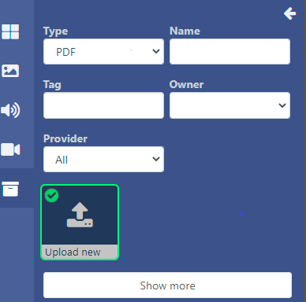
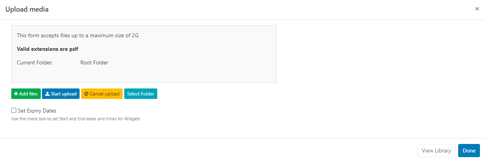
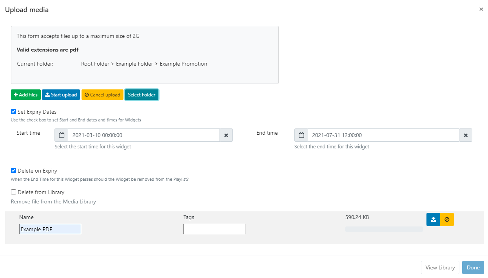
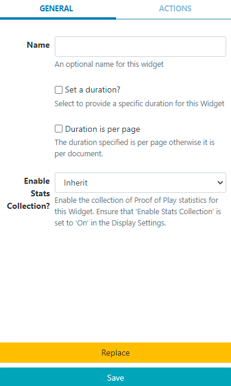

Locate PDF from the Widget toolbar and click to
Add or Grab to drag and drop to a Region.
Use the Library Search function to add PowerPoint files
already uploaded to the Library.
NOTE: Use the Library other media search and filter by
Type to select Upload new and add to a Layout:

Upload Media File
The file uploader will open on adding the PDF Widget:

Captivad uses pdfjs to display PDF’s on the Player and in the Layout Designer.
Click on Add files and select the file(s) to upload
Files can also be added via drag and drop!
Give your file a Name for easier identification in the CMS and an optional Tag.
If the Name field is left blank, the file will be named as per the original file name on upload!
PDF files can also be directly uploaded to a specified Folder
location.
PDF files that are saved in Folders will inherit the View, Edit, Delete Share options that have been applied to the
destination Folder for User/User Group access!
There is an option to Set Expiry Dates and times for files uploaded to this
particular Widget.
This is particularly useful should you need to preload PDF’s to be shown at a later date/time!
Tick the Set Expiry Dates box.

Select Start and End dates and times.
Use the check boxes to remove the media file from the Playlist on expiry and delete from the
Library.
Click the Start upload button to begin the upload of all files added. If a
Folder/Expiry Dates have been selected and there are multiple files to be added, all files
will be uploaded to the specified location and have the same Expiry Dates set.
Once successfully uploaded, click Done.
Files can also be uploaded individually and have different Folder locations/Expiry dates and times
specified.
Instead of clicking on the Start upload button, click on the blue upload button
shown at the end of the row for an added file.
View or make changes to Expiry Dates by clicking on the icon on the Widget from the Timeline!
Configuration Options
Click on the added PDF Widget from the Timeline to open
configuration options in the properties panel:

Make edits to naming of the Widget if required.
Tick the Set a duration to provide a specific duration for the entire PDF.
or
Provide a duration and use the checkbox to apply the duration to each page
of the PDF.
Actions
Interactive Actions can be attached to this PDF Widget from the Actions tab. Please
see the Interactive Actions page for more
information.